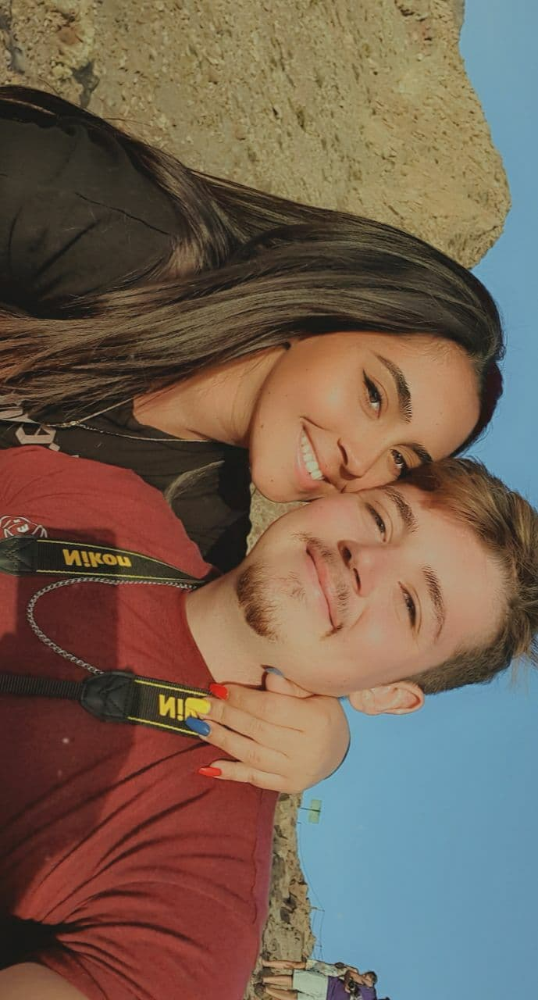
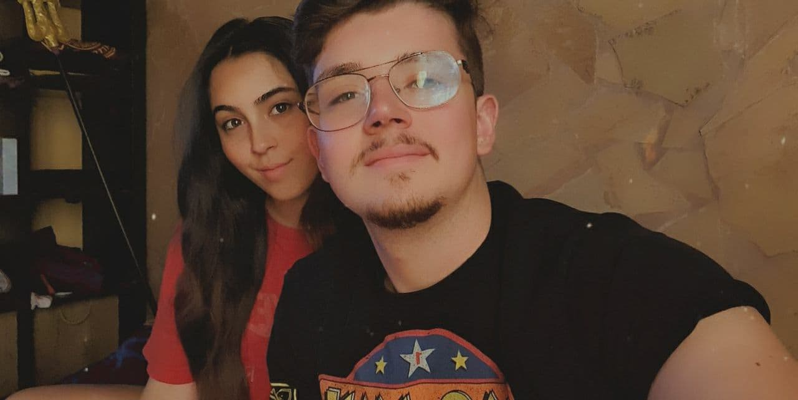
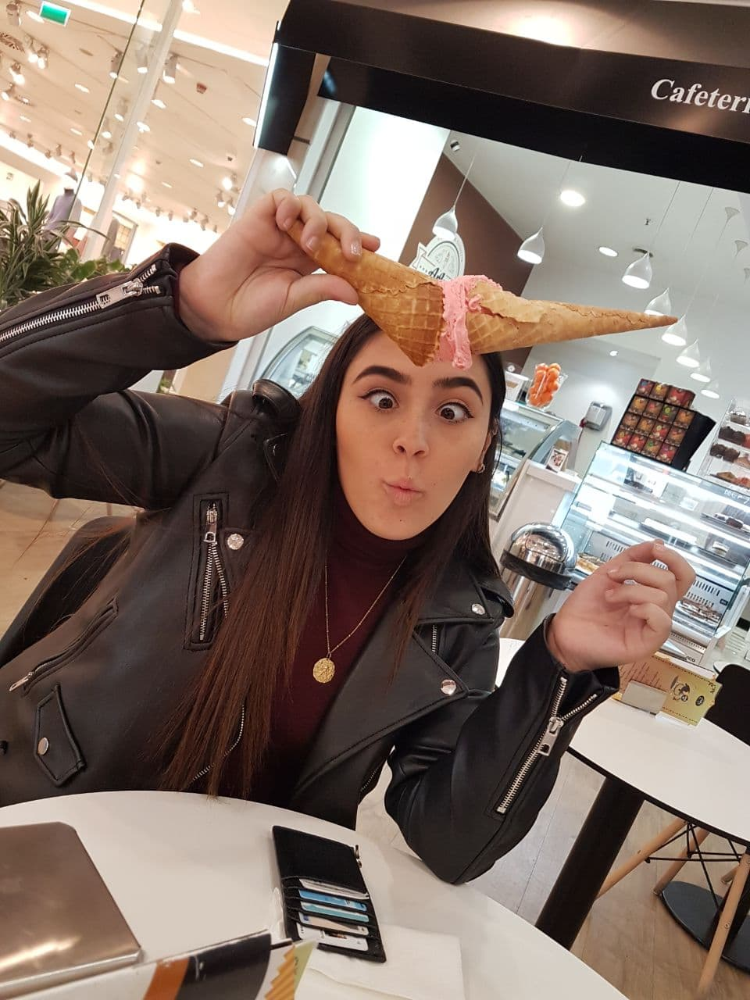
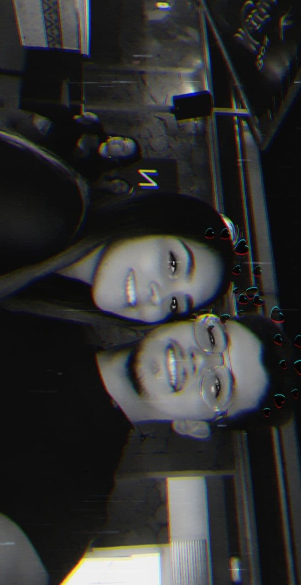
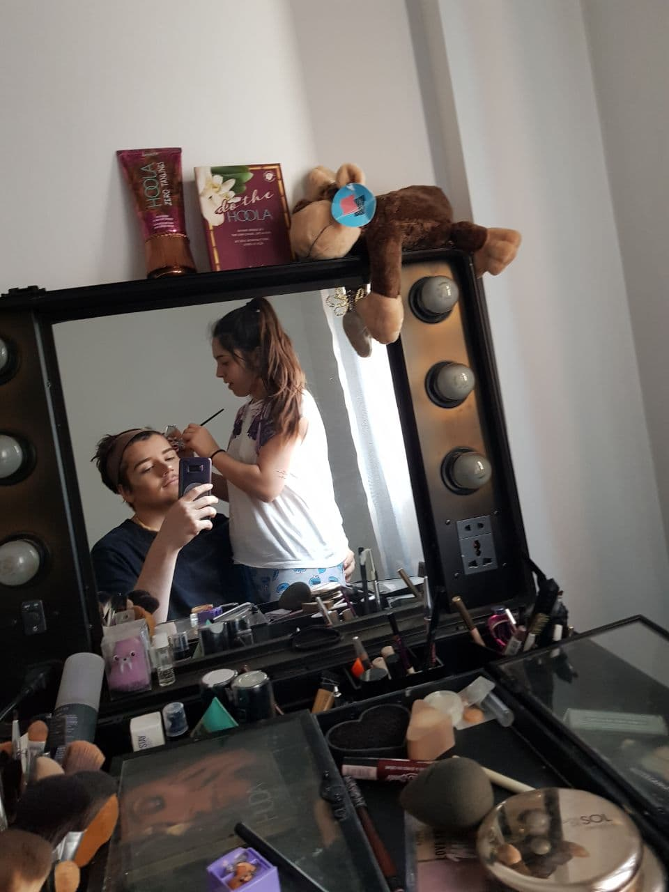

Hola mi vida, se acercan estas fechas tan emocionantes y no puedo evitar ponerme a escribir, aunque siempre me quede en blanco,
me es increiblemente dificil expresar todo lo que me gustaría decirte en una simple carta, asi que ten paciencia, ya que si no
lo hacen estas palabras lo harán mis actos, pues no creo que pueda expresar el gran amor y afecto que tengo por ti.
A veces me pregunto ¿Cómo he tenido la suerte de encontrar al amor de mi vida? ¿Qué habré hecho yo para merecerme esto?
y te puedo asegurar que todavia sigo sin encontrar la respuesta, simplemente me ha tocado la lotería al conocerte y no podría
ser más feliz en esta vida y todo gracias a ti, por ser la luz que me ilumina, la luz que me llena de alegría, la luz que da
sentido a mi vida.
Son mil y unas las canciones que me recuerdan a ti, son mil y uno los momentos en los que no puedo parar de pensar en ti,
son muchos los lugares en los que solo quiero viajar a tu lado, son muchas las locuras que nos quedan por vivir
y todas serán las mejores de mi vida porque las pasaré a tu lado.
Es realmente increible por lo que hemos pasado, por las historias tan bonitas que podremos contar, por las anecdotas tan preciosas que tenemos
para recordar, por la cantidad de cosas por la que volveriamos a reir y la cantidad de cosas que nos volverían a alegrar hasta el peor de
nuestros días.

Quien nos ha visto y quien nos ve, somos la pareja de baile más perfecta que jamás alguien podría imaginar, compañeros de vida complementándonos
en una perfecta armonía. Pasito a pasito, demostrando que estuvimos hechos el uno para el otro, haciendo nuestra cualquier canción que se nos cruce
en el camino, guardando nuevos pasos a cada segundo que se suma en nuestro minutero.

Seguimos un camino del que no me arrepiento, un camino del que no me canso de explorar, unos mares de los que no me aburro de surcar. Eres la guía de mi vida,
tus ojos brillan como la estrella polar, la cual se encarga del norte señalar, tu voz, el sendero que me transporta al más grande oasis que en el desierto
encontrarás y tu piel es el camino que me dispongo a investigar. Pero, una vida a tu lado, ese increible botín, es el tesoro que este pirata desea encontrar.

A veces me paro a pensar, miro por todo lo que hemos avanzado y digo ¡wow! fijate en lo lejos que hemos llegado... Aunque, no es en lo unico en lo que pienso, si no que
pienso en lo lejos que podremos llegar, no puedo parar de imaginarme posibles futuros a tu lado, posibles planes a realizar, posibles fantasias que me encantaría cumplir,
los cuales formarán los recuerdos más maravillosos de los que no puedo parar de soñar.
En estos momentos ya, es inevitable, lo supe desde el principio y todavía sigo enmaravillado de la sonrisa que te ilumina y te hace destacar sobre cualquier persona,
nada más me dedicaste la primera de ellas, no pude evitar enamorarme perdidamente, es por eso que de las cosas que mas feliz me hacen en esta vida, es verte sonreir.
Solo espero que nunca pierdas esa sonrisa tan bonita que tienes, ya que con ella, contagias de pura felicidad a todos tus seres queridos.
